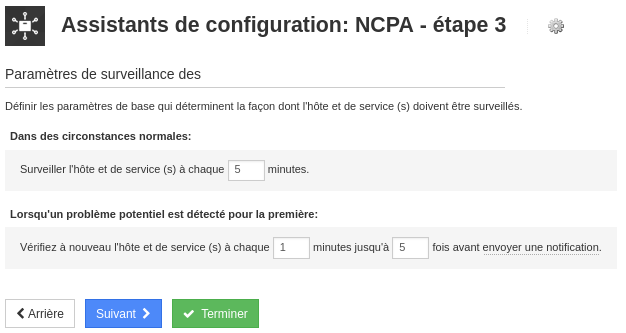

Serveur NAGIOS
Objectif et environnement
Objectif
Installation NAGIOS sur un conteneur LXC de Proxmox.
Environnement
Matériels :
Dell PowerEdge r240 avec Proxmox 7.1-7
Adressage des VMS :
Réseaux : 172.28.0.0/16
NAGIOS une VM Debian 11 : 172.28.1.207/16
Documentation
Processus
Installation
J’ai téléchargé Nagios sur le dépôt officielle, décompressé et lancé le script installation
cd /tmp
wget https://assets.nagios.com/downloads/nagiosxi/xi-latest.tar.gz
tar xzf xi-latest.tar.gz
cd nagiosxi
./fullinstall
Finalisation du l’installation
Je me suis connecté sur le site http://172.28.1.207/nagiosxi
J’ai accepté le contrat de licence
Une fois la configuration terminée, je peux entrer sur la page principale avec le compte précédemment crée.
La page d’accueil de NAGIOS
Visualisation des services sur le localhost (Détails > Statut d’accueil)

Intégrer Active Directory dans NAGIOS
Utilisateurs > ldap / ad intégration
J’ai ajouté un serveur d’authentification
Ajouter des utilisateurs
Utilisateurs > Gérer les utilisateurs
Choix ajouter des utilisateurs à partir de LDAP/AD

J’ai sélectionné et ajouté les utilisateurs
Dans le menu éditer, on peut renseigner les paramètres de sécurité pour les utilisateurs
Utilisateur simple :
Administrateur :
Préférences pour tous les utilisateurs
Une fois finalisé j’ai importé les utilisateurs
La liste des utilisateurs
Installation OpenSSH sur Windows Serveur 2019
Paramètres > Applications et fonctionnalités > Gérer les fonctionnalités facultatives
Si manquant, ajouter Client OpenSSH et Serveur OpenSSH
J’ai démarré le service avec une commande PowerShell et rendu démarrage automatique au lieu de manuel.
Start-Service -Name "sshd"
Set-Service -Name "sshd" -StartupType Automatic
J’ai vérifié à ce que ça soit bien démarré
Déployer l’agent Nagios sur Windows Server
Menu Configurer > Déployer l’agent
Ajouter un Windows serveur 2019 (ADDS) à surveiller
Configurer > Assistants de configuration > Active directory
J’ai renseigné l’adresse IP du serveur AD
J’ai renseigné les données nécessaires à la connexion de l’AD
Les paramètres suivants j’ai laissé par défaut
Configuration des paramètres de notification
Déployer l’agent Nagios sur Serveur Ubuntu (SAMBA)
Configurer > Déployer l’agent
J’ai choisi assistant de configuration
Limites d’utilisation du processeur à surveiller
Limites d’utilisation de la mémoire à surveiller
Choix des disques que je souhaite surveiller
Délais interrogation du client, puis terminer.

Intégrer Nagios dans Active Directory

NB : le procédé d’intégration est expliqué dans le chapitre Active Directory.
Conclusion
Il est aisé d’ajouter des nouveaux hôtes à surveiller avec l’assistant de configuration à condition d’avoir un lien SSH. Les services de surveillance de base proposés sont ; CPU, mémoire, stockage, trafics réseaux.